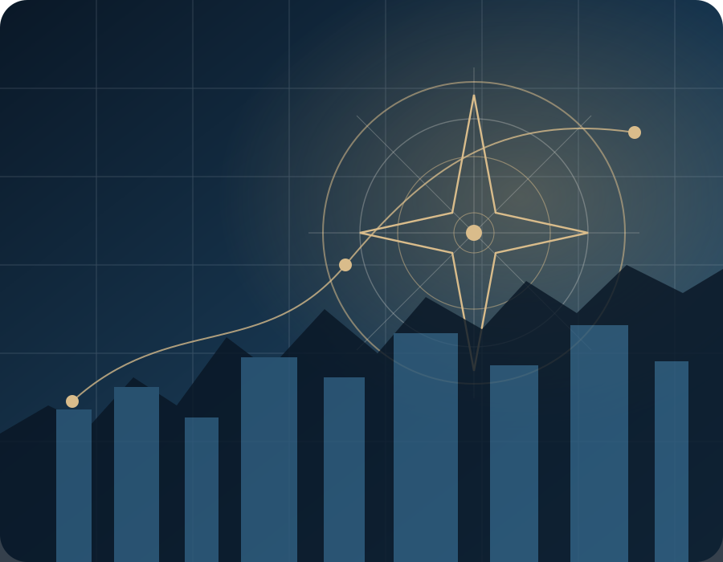
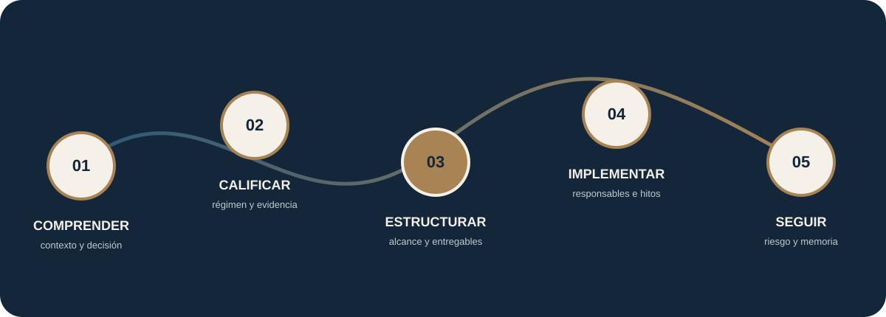

DERECHO · EMPRESA · TECNOLOGÍA
Dirección jurídica para decisiones que deben avanzar.
Integramos criterio jurídico, comprensión empresarial y tecnología para estructurar decisiones, proteger activos y acompañar proyectos complejos desde el diagnóstico hasta la implementación.
- Alcances claros
- Entregables ejecutivos
- Seguimiento trazable

MERIDIANO LEGAL
Una práctica jurídica construida alrededor de la decisión empresarial.
No entregamos respuestas aisladas. Organizamos contexto, identificamos dependencias, definimos el alcance y convertimos el criterio jurídico en contratos, matrices, políticas, expedientes y acciones verificables.
La automatización ordena información y evidencia; el criterio jurídico permanece bajo supervisión profesional. No prometemos resultados que dependan de autoridades, contrapartes o terceros.
PUNTO DE ENTRADA
¿Qué necesita estructurar?
Seleccione la decisión que más se aproxima a su situación.
SERVICIOS PROFESIONALES
Soluciones conectadas con la empresa.
Para asuntos complejos o a la medida que requieren análisis, negociación, implementación y dirección profesional.
Diagnóstico jurídico empresarial
Mapa de exposición, prioridades y plan jurídico de 90 días.
Revisar alcance →Dirección jurídica externa
Capacidad recurrente para decisiones, contratos, riesgos y proyectos.
Revisar alcance →Contratos y negociaciones
Diseño, revisión y negociación de relaciones empresariales críticas.
Revisar alcance →Sociedades, socios e inversión
Gobierno, acuerdos, reformas, capital e ingreso de inversionistas.
Revisar alcance →Propiedad intelectual
Marcas, software, contenidos, licencias, cesiones y secretos.
Revisar alcance →Gobernanza de inteligencia artificial
Casos de uso, datos, proveedores, roles, controles e incidentes.
Revisar alcance →Proyectos regulados
Viabilidad, autoridades, permisos, responsabilidades y hoja de ruta.
Revisar alcance →Organización de la operación jurídica
Canales, flujos, documentos, indicadores, evidencia y mejora continua.
Revisar alcance →PRODUCTOS DE ALCANCE CERRADO
Resultados definidos, metodología y límites explícitos.
Cada producto parte de una pregunta ejecutiva y termina en entregables, responsables, fechas y criterios de continuidad.
Diagnóstico Jurídico Empresarial
Saber qué debe atenderse primero, por qué importa y cómo convertirlo en un plan ejecutable.
Empresa Jurídicamente Organizada
Convertir acuerdos informales y documentos dispersos en una estructura administrable.
Marca, Software y Activos Protegidos
Asegurar titularidad, protección y reglas de explotación de activos intangibles.
Empresa Lista para Inversión
Preparar gobierno, contratos, capital, intangibles, contingencias y data room.
Programa de Gobernanza de IA
Inventariar casos, clasificar riesgos, definir roles, controles y evidencia.
Proyecto Regulado Estructurado
Definir viabilidad, permisos, actores, contratos, condiciones y secuencia.
Sistema Contractual Empresarial
Pasar de contratos aislados a un sistema con aprobación, obligaciones y renovaciones.
Datos Personales y Consumidor
Convertir políticas en procesos, responsables, evidencias y respuestas consistentes.
PLANES RECURRENTES
Continuidad, memoria institucional y capacidad de respuesta.
Dirección Jurídica Externa
Comité, prioridades, atención, reporte y gobierno jurídico mensual.
Cadencia mensualGestión Contractual Continua
Solicitudes, negociaciones, obligaciones y renovaciones bajo un flujo medible.
Mensual o trimestralSecretaría Societaria
Decisiones, actas, libros, poderes y calendario corporativo trazable.
Mensual, trimestral o anualGestión Jurídica Regulatoria
Permisos, autoridades, obligaciones, cambios y condicionantes del proyecto.
Mensual o por hitosBanco Documental y Legal Operations
Plantillas, versiones, permisos, métricas y ciclos de actualización.
Implementación y mantenimientoDOCUMENTOS GUIADOS
Necesidades delimitadas con captura estructurada y revisión proporcional al riesgo.
La demo incluye seis recorridos documentales. Un documento guiado no sustituye una asesoría integral cuando existen negociación, contingencias o estructuras complejas.
Explorar en la demoContrato empresarialObjeto, precio, obligaciones, responsabilidad y terminación.
Acuerdo de confidencialidadInformación, usos, excepciones, custodia y devolución.
Acta societariaConvocatoria, quórum, decisiones, facultades y formalización.
Política de tratamiento de datosFinalidades, derechos, canales, seguridad y vigencia.
Cesión o licencia de activosTitularidad, alcance, territorio, usos y contraprestación.
Matriz de obligacionesFuente, responsable, fecha, evidencia y estado.
EXPERIENCIA APLICADA
Sectores donde el derecho debe conversar con la operación.
Modelos, actores, contratos, aprovechamiento y proyectos territoriales.
Producción, comercialización, alianzas, activos y regulación sectorial.
Desarrollo, licencias, datos, propiedad intelectual y gobernanza.
Estructuración, convenios, actores, cronogramas y cumplimiento.
Contratos, canales, consumidor, marca, metas y terminación.
Prestadores, alianzas, experiencia del usuario, datos y riesgos.
RUTA MERIDIANO
De una necesidad abierta a un inicio profesional claro.

Antes de enviar información confidencial: presente la necesidad general. Se revisan contexto y disponibilidad, se delimita el alcance y se remite una propuesta. La relación profesional solo inicia con aceptación expresa y validaciones aplicables.
MERIDIANO EMPRESAS
Un portal demostrativo para dar seguimiento a decisiones, documentos y obligaciones.
Revise dashboards por perfil, tickets, expedientes, documentos guiados, archivos, calendario, riesgos y analítica con datos completamente ficticios.
Ingresar a la demoCliente · Abogada · Socio director
SIGUIENTE PASO
Presente la decisión que necesita estructurar.
Comparta únicamente información general. El alcance, la inversión y las condiciones se confirman mediante propuesta escrita.